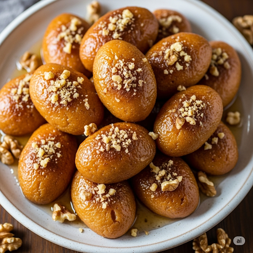

Home
Melomakarona: A Taste of Greek Holiday tradition

Description
Melomakarona are traditional Greek cookies enjoyed especially
during the Christmas season. These aromatic, honey-soaked
delights are made with olive oil, orange juice, and warm
spices like cinnamon and clove. Once baked, they’re dipped
in a fragrant syrup of honey and sugar, then sprinkled with
crushed walnuts for a rich and satisfying finish. Soft, moist,
and naturally dairy-free, melomakarona capture the comforting
lavors of the Mediterranean and the spirit of Greek
hospitality in every bite.
Ingredients
For the syrup
- 500 ml water
- 400 g of sugar
- 3 cinnamon sticks
- Peels from one orange
- Peels from one lemon
- 600 g of good quality thyme honey
For the baking mixture
- 240 ml olive oil
- 240 ml sunflower oil
- 120 ml cognac or brandy
- Juice and zest from one orange
- 200 g sugar
- 1 kilo of all purpose flour
- 2 tsp baking powder
- 1 tsp cooking soda
- 1 tsp of ground clove
- 2 tsp of cinnamon powder
Steps
For the syrup
- We heat a saucepan over medium to high heat, add the water,
sugar, cinnamon sticks, lemon peels and orange peels, and
as soon as it comes to a boil
- Once the sugar dissolves, we remove the saucepan from the
heat and add the honey, stir, and set the syrupaside until it
cools well
For the dough
- In a large bowl, we add the olive oil, sunflower oil, cognac,
orange juice, orange zest, sugar, and mix well with a hand whisk
- We gradually add the liquid mixture to the bowl with the dry
ingredients and mix with our hands until the mixture becomes homogeneous.
We're careful not to overmix and release the oil from the mixture,
because the melomakarona won't be as crispy as we want them
- We shape the mixture into oval shaped balls and lay them side by side
with parchment paper.
- With a fork, we create small holes on the top side of each melomakarona,
so they bake faster and absorb the syrup more quickly.
- We bake for 20 to 25 minutes, until they turn a deep golden color.